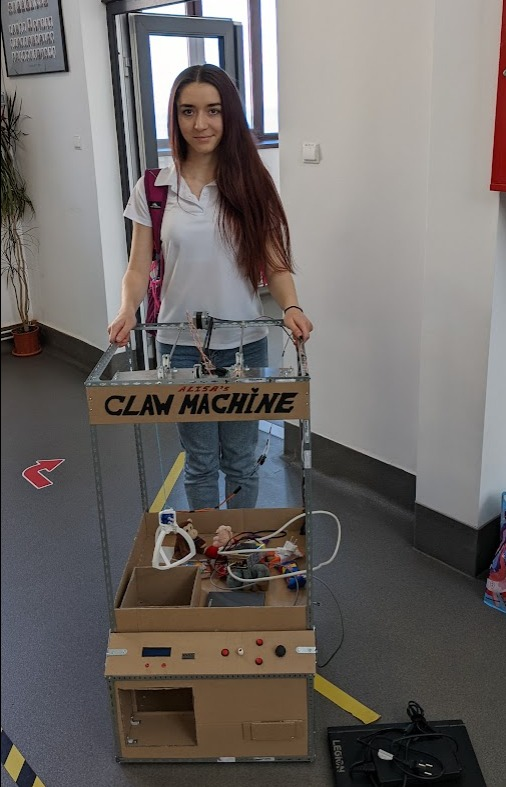
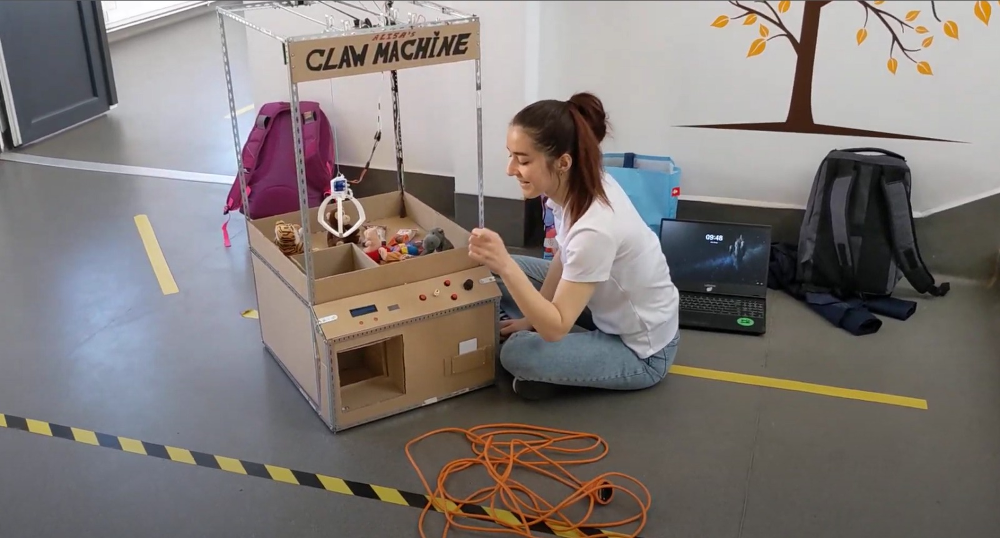
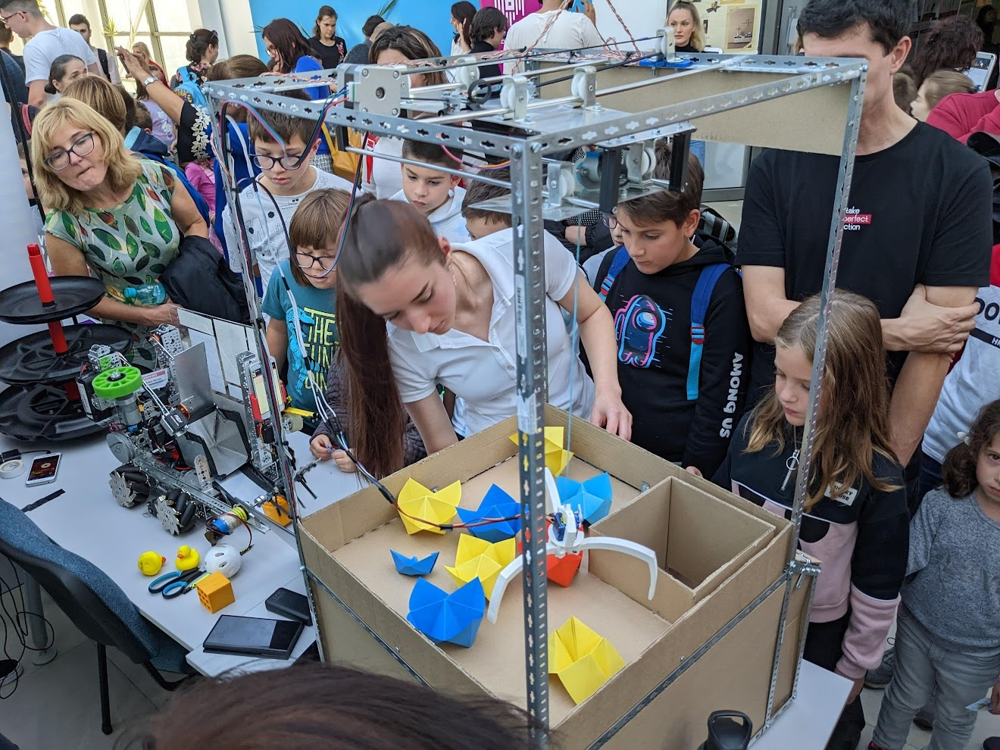
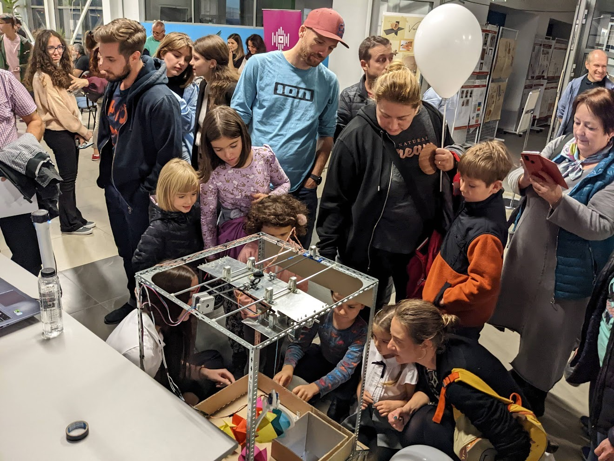
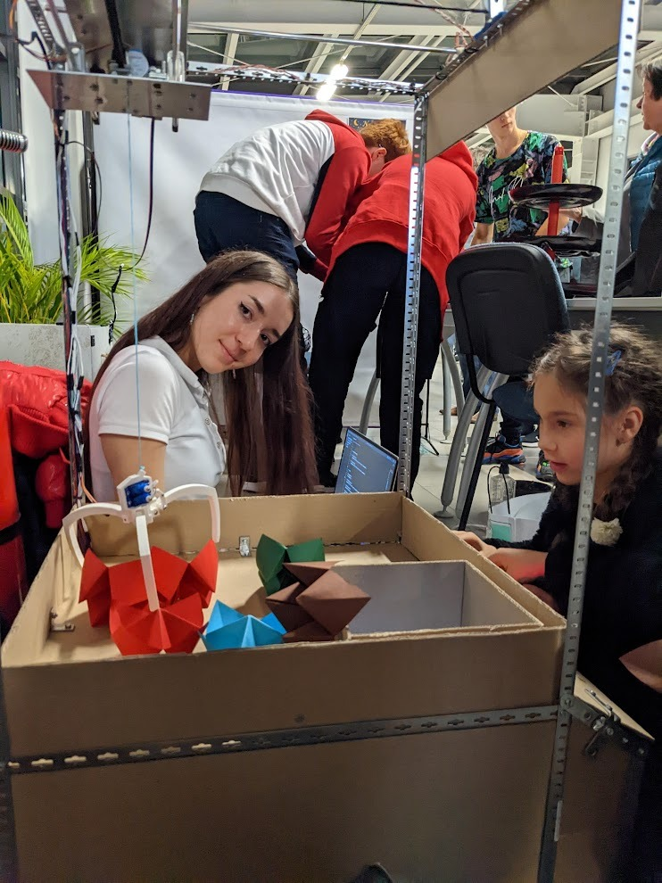
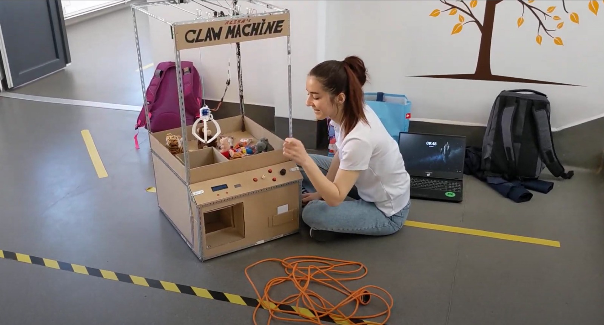
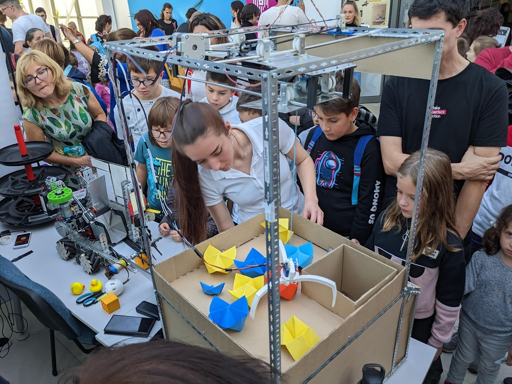
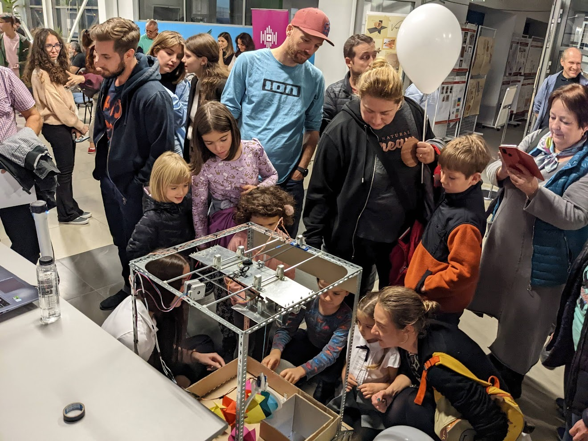
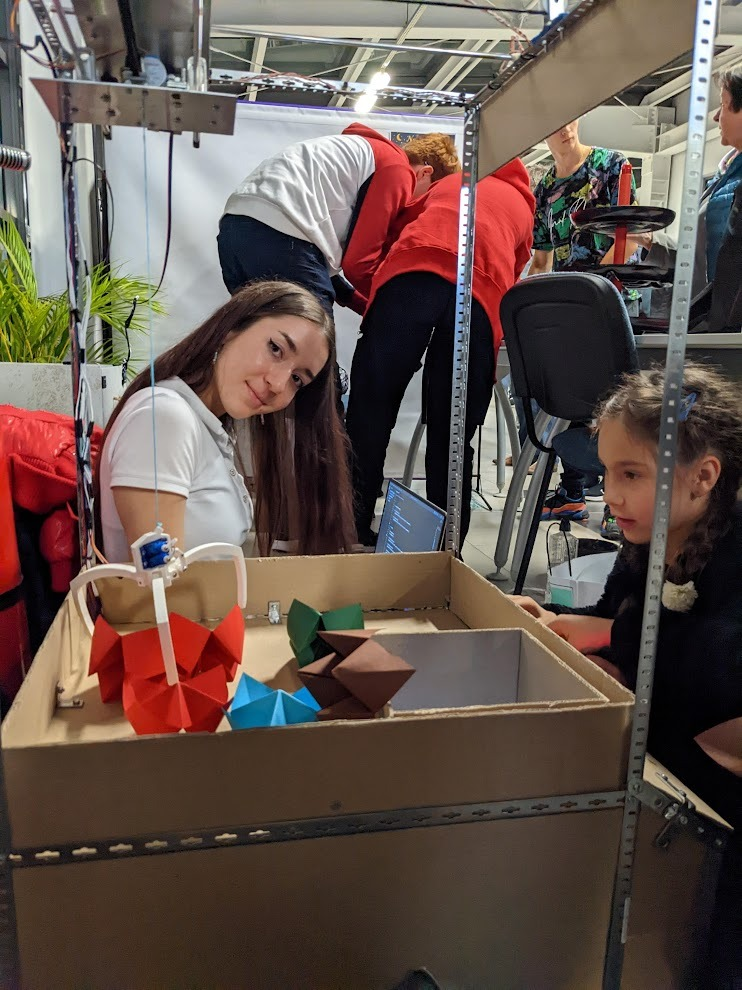

Robotics and Coding
Claw machine
In 2022, Transilvania University of Brașov hosted a project named "InfoTron". They introduced highschoolers into the world of robotics, by giving away Arduino kits and a few courses. I signed up for the project. At the end of the project, there was a competition that required us to make a robot. I made my Claw Machine over the course of 50 days and I won first place. The Claw Machine is a 1 meter tall robot, that includes a cartesian axis system, a claw system, a light sensor array, a control panel with numerous buttons, a display and a few other sensors and actuators. I built and programmed the entire robot myself. It was a fun project to make, since it required a complex range of skills: from tinning wire and cutting metal to programming and making algorithms.
Claw machine:





Winning(with subtitles):
My progress (pictures and videos):


Presentation sheet:


Coding
When I entered high school I got into programming. Coding comes naturally for me, since I believe I am a logical thinker. I have learned C, C++, HTML and CSS so far. I made some little games, I wrote my claw machine's code, I participated in Advent Of Code and I built this website! :D I enjoy coding and I am excited for future projects.
My GitHub page



